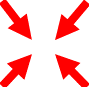
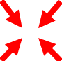

| Rudder |
Move horizontal slider left and right |
Use left arrow and right arrow keys. |
| Sail Tension |
Move left slider up or down |
Use up arrow and down arrow keys. |
| Keel position: up, middle or full |
Move the 3 position vertical slider on right |
Use the PgUp and PgDown keys. |
| Sail selection |
Two button on bottom left screen allow to select front sail (FS) or main sail (MS) to be affected by the sail tension slider and keys. If both are not selected, slider and keys control both sails together. |
Use the W key for front sail, and S key for main sail. |
| Kick rudder |
A blue left and right arrows, perform a sudden kick of the rudder to the left or the right respectfully, when clicked. This can help getting the boat out of stalling when facing wind for instance. |
Use the Left shift and Right Shift keys respectfully. |
| Man in the water drill |
Click the little buoy  icon to "throw" a small life saver to mark a man in the water situation. Click on the thrown buoy to grab it back to the boat. icon to "throw" a small life saver to mark a man in the water situation. Click on the thrown buoy to grab it back to the boat. |
Click the space bar to toggle man in the water throw/grab action. |
| Pause/Play the game |
Click the  icon to pause the game, and then the icon to pause the game, and then the  icon to resume it. icon to resume it. |
Click the P key to toggle pause/play modes. |
| Reset, restart the game |
Click the icon to move the boat and screen back to initial state. |
Click the R key to reset the game. |
| Help info |
Click the  icon, to see a keyoard shortcut commands outline image. To close, click the Close button on the bottom, or click the icon again. icon, to see a keyoard shortcut commands outline image. To close, click the Close button on the bottom, or click the icon again. |
Click the ? (usually ? and slash) key for that. Click again to close or hit the close button. |
| Zoom in/out |
No GUI |
Use the Z key to toggle between zoom out and in of the scene. |
| Track option |
No GUI |
Use the X key to toggle between whether camera follows the boat direction, or stays fixed to the north (screen upwards). |
| Enlarge/Reduce text and icons overlays. |
Clicking the green arrows in the  button increases size of all GUI elements, clicking the red arrows in the  button decreases them. button increases size of all GUI elements, clicking the red arrows in the  button decreases them. |
Use the + keyboard key (i.e., the + and = key, without using shift!) for size increase, and the - (minus and underline key) to decrease. |
| Quit the program |
Click the  icon, then confirm or cancel icon, then confirm or cancel |
-C - hold the control key and click C. This too will invoke a confirm dialog. |
| Toggle full screen |
No GUI |
F11 - click the function key F11. |